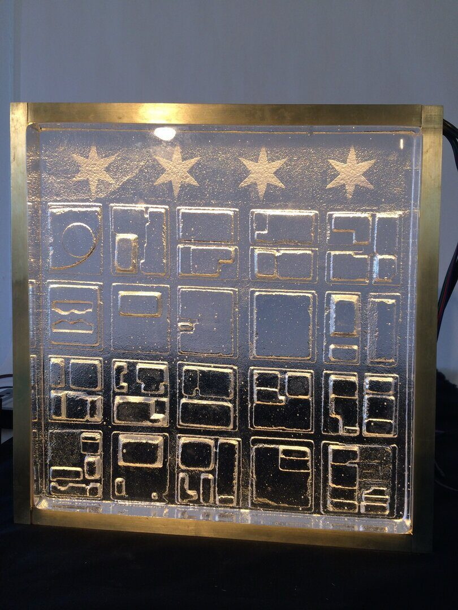
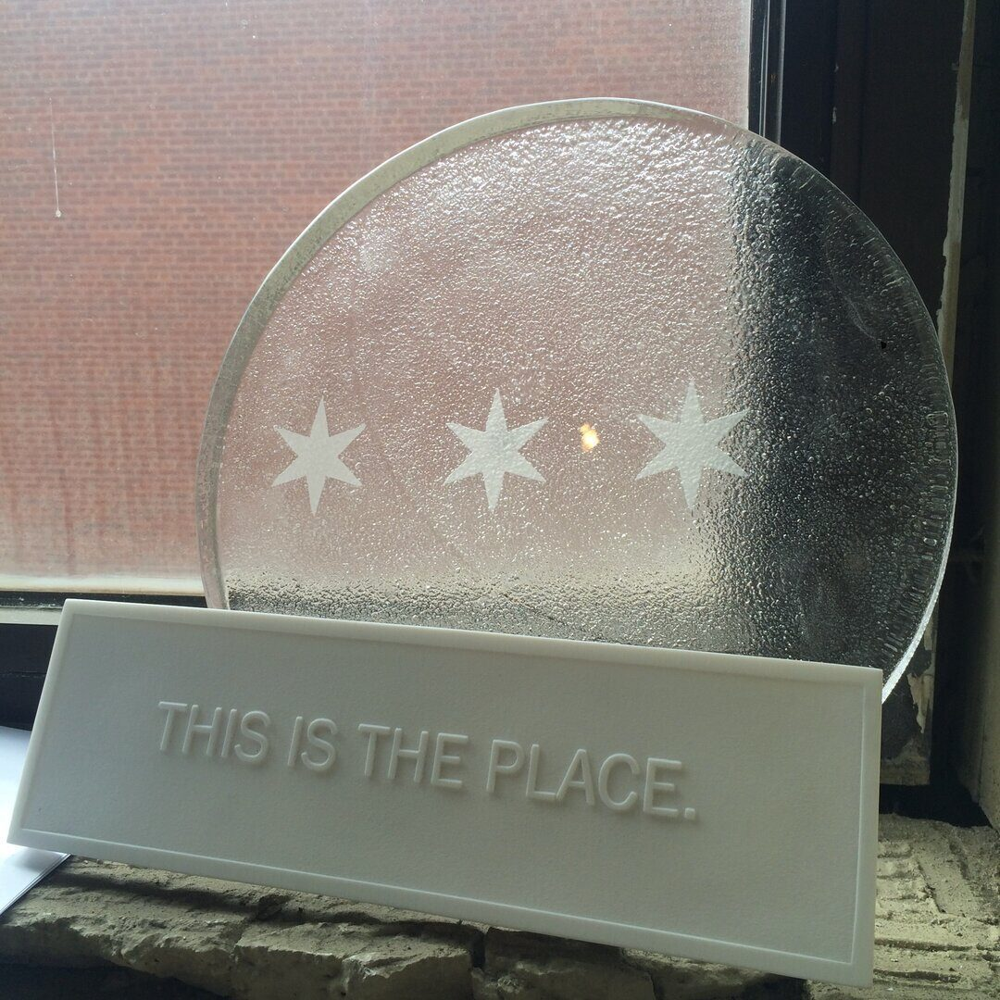
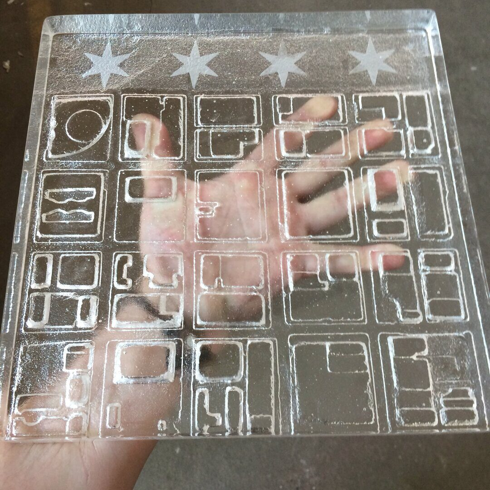
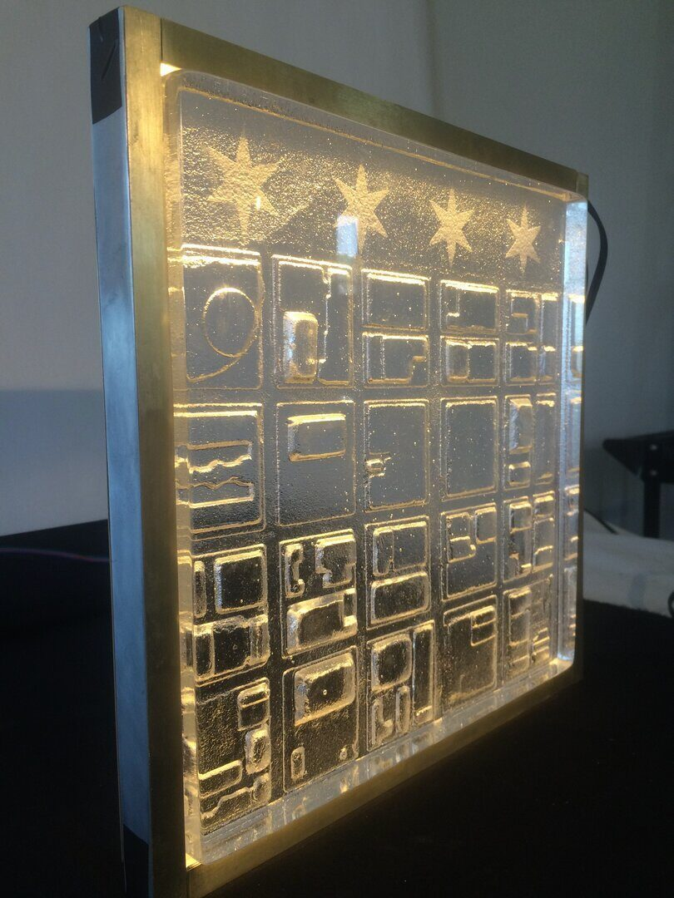
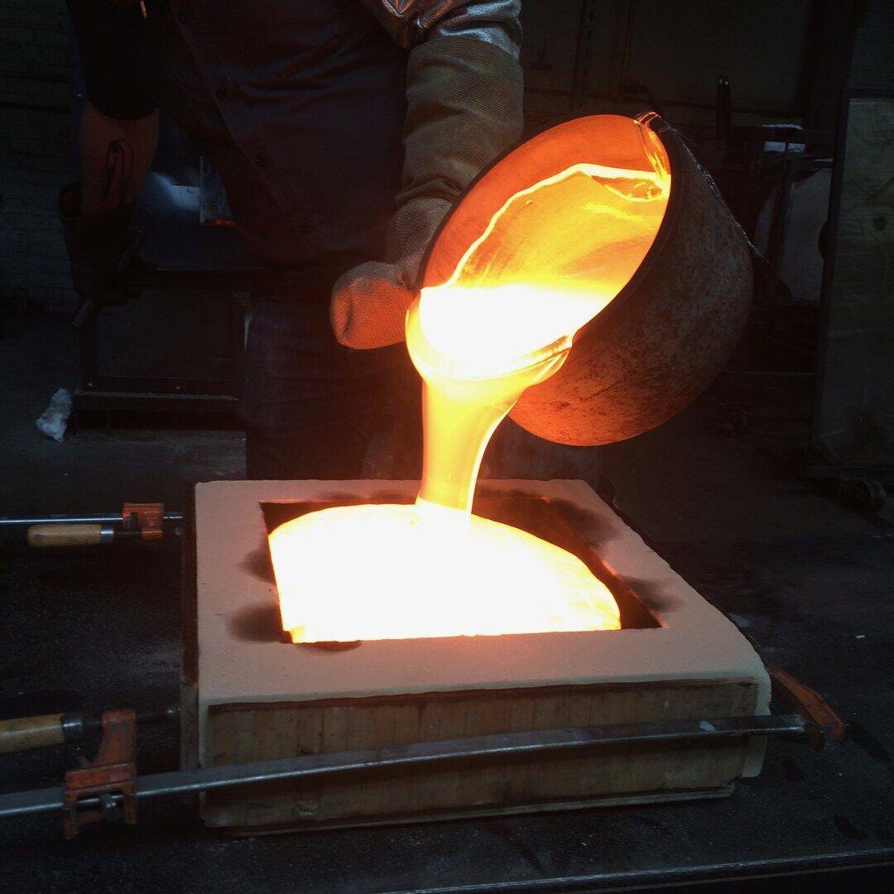

Glass / Archive
Mayor's Office Cast Glass
Chicago civic glass object
A cast-glass civic object for Chicago's Mayor's Office at City Hall, using map relief, star details, texture, and light to carry a sense of place.
This Mayor's Office project brought together cast glass, civic iconography, and light in a compact architectural object.
The piece uses a map-like relief, star references, and the thickness of glass to hold information without flattening it into signage.
Process images from the pour show the physical intensity behind the quieter finished object: heat, mold work, annealing, finishing, and the final edge-lit read.
Details
- Year
Archive - Location
Chicago, IL - Category
Glass - Materials
Cast glass, relief texture, edge-lit presentation study
Credits
- Client context: Chicago Mayor's Office / City Hall
- Glass: ChiLab Studio
Download
Index




